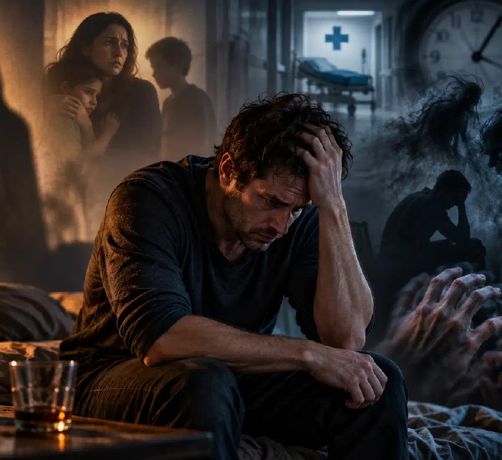

+38(068) 79 72 782
+38(068) 79 72 782Чого алкоголіки бояться найбільше
Основні страхи людей з алкогольною залежністю та причини відмови від лікування


Безкоштовна консультація, працюємо цілодобово 24/7
Основні страхи людей з алкогольною залежністю та причини відмови від лікування

Дата написання: 19 жовт. 2026 р.
Останнє оновлення: 19 жовт. 2026 р.
Алкогольна залежність супроводжується не лише фізичною потребою у спиртному, а й психологічними проблемами, внутрішніми суперечностями, тривожністю та численними страхами. Людина може розуміти, що алкоголь руйнує її здоров’я, стосунки з близькими та звичний спосіб життя, але продовжувати вживання через страх перед відмовою від спиртного. Одні бояться тяжкої абстиненції, інші — осуду оточення, постановки на наркологічний облік або необхідності змінити своє життя. Щоб зрозуміти, чого алкоголіки бояться найбільше, необхідно розібратися в психологічних механізмах залежності та причинах відмови від лікування. Своєчасна консультація нарколога допомагає оцінити стан пацієнта, визначити медичні ризики та підібрати відповідну програму відновлення.
Алкогольна залежність впливає на роботу центральної нервової системи, емоційний стан і здатність справлятися зі стресом. За регулярного вживання спиртного організм адаптується до впливу етанолу, а зниження його концентрації може супроводжуватися тривогою, дратівливістю, внутрішнім напруженням і порушенням сну. Людина починає сприймати алкоголь як спосіб тимчасово позбутися неприємних відчуттів. Поступово формується замкнене коло: спиртне на короткий час полегшує емоційний дискомфорт, але надалі посилює психологічні та фізичні проблеми. Страхи при алкоголізмі можуть бути пов’язані з наслідками вживання, погіршенням здоров’я, втратою контролю над поведінкою та невизначеністю майбутнього. Іноді тривожність стає настільки вираженою, що людина уникає розмов про свою залежність і відмовляється розглядати можливість лікування.
Один із найпоширеніших психологічних бар’єрів при алкоголізмі — небажання визнавати існування залежності. Людина може переконувати себе, що здатна припинити вживання спиртного будь-якої миті, пояснювати запої стресом, втомою або життєвими обставинами. Визнання проблеми сприймається як загроза самооцінці та звичному уявленню про себе. Деякі люди побоюються розчарувати сім’ю, втратити повагу колег або зіткнутися з критикою оточення. Тому спроби родичів поговорити про лікування іноді викликають роздратування, заперечення та захисну реакцію. Водночас заперечення залежності не завжди означає свідоме бажання обманути близьких. Воно може бути психологічним способом уникнути болісних переживань. Лікування алкогольної залежності починається з медичної оцінки стану, обговорення проблеми та формування мотивації до змін.
Для людини з тривалою алкогольною залежністю відмова від спиртного може здаватися серйозним випробуванням. Алкоголь поступово стає частиною повсякденних звичок, способом розслаблення, спілкування та тимчасового полегшення емоційного напруження. Пацієнт може побоюватися, що без спиртного не зможе заснути, впоратися зі стресом або отримувати задоволення від звичних занять. Додатковою перешкодою стає страх фізичного погіршення самопочуття після припинення вживання. За сформованої залежності різка відмова від алкоголю справді здатна спричинити синдром відміни, іноді з небезпечними ускладненнями. Тому людині важливо пояснити, що припинення вживання не обов’язково має відбуватися без медичної підтримки. За високого ризику тяжкої абстиненції необхідні лікарська оцінка та безпечний план лікування.
Для деяких людей спиртне стає способом тимчасово відволіктися від сімейних конфліктів, фінансових труднощів, самотності та емоційних переживань. У стані сп’яніння неприємні думки можуть здаватися менш значущими, проте після припинення дії алкоголю проблеми залишаються. Виникає страх зіткнутися з накопиченими обов’язками, наслідками власної поведінки та необхідністю ухвалювати складні рішення. Іноді людина продовжує вживати спиртне не заради задоволення, а задля тимчасового полегшення тривоги. Такий механізм підтримує залежність і ускладнює самостійне відновлення. Робота з психологом або психотерапевтом допомагає розібратися в причинах уникнення проблем, навчитися переносити неприємні емоції та поступово формувати здоровіші способи реагування на стрес.
Тверезість може сприйматися людиною з алкогольною залежністю як невідомий стан, особливо якщо вживання спиртного тривало багато років. Пацієнт не завжди уявляє, як проводитиме вільний час, відпочиватиме, спілкуватиметься з друзями та справлятиметься з емоційними труднощами без алкоголю. Додаткові переживання пов’язані зі страхом повторного зриву та сумнівами у власних силах. Іноді людина заздалегідь переконує себе, що тривале утримання від спиртного неможливе. Насправді відновлення є послідовним процесом, який може включати психотерапію, медикаментозне лікування, соціальну підтримку та зміну звичок. Важливу роль відіграє індивідуальна програма допомоги, яка дає змогу поступово адаптуватися до тверезого життя та зменшувати ризик повернення до вживання.
Алкогольна абстиненція — одна з найбільш обґрунтованих причин страху перед припиненням вживання у людей із фізичною залежністю. Після зменшення дози або повної відмови від спиртного можуть з’являтися виражена тривога, тремтіння рук, пітливість, прискорене серцебиття, нудота, безсоння та підвищення артеріального тиску. У тяжких випадках розвиваються судомні напади, галюцинації та алкогольний делірій. Ризик ускладнень залежить від тяжкості залежності, попередніх епізодів відміни, супутніх захворювань та інших чинників. Лікування алкогольної абстиненції має враховувати індивідуальний стан пацієнта. За наявності факторів ризику необхідний медичний контроль, а тяжкий синдром відміни потребує стаціонарного лікування. Самостійне застосування снодійних і заспокійливих препаратів може бути небезпечним.
Після тривалого вживання алкоголю людина може відчувати сильну слабкість, головний біль, нудоту, серцебиття, порушення сну та емоційну нестабільність. Якщо сформувалася фізична залежність, до наслідків інтоксикації приєднуються симптоми алкогольної відміни. Деякі пацієнти продовжують вживати спиртне, оскільки чергова доза тимчасово зменшує тремор і тривожність. Така поведінка сприяє продовженню запою та збільшує ймовірність ускладнень. Виведення із запою передбачає попередню оцінку стану та вибір безпечної медичної тактики. За стабільного стану окремі лікувальні заходи можуть проводитися амбулаторно або вдома за рішенням лікаря. За тяжкої абстиненції, судом, порушення свідомості та інших небезпечних симптомів потрібна екстрена медична допомога.
Тривале вживання спиртного підвищує ризик порушень серцевого ритму, зневоднення, електролітних розладів, ураження печінки, шлунково-кишкових кровотеч та інших серйозних ускладнень. Людина може відчувати страх смерті за вираженого серцебиття, задишки, болю в грудях або різкого погіршення самопочуття. Однак самостійно визначити причину таких симптомів неможливо. Особливо небезпечними є судоми, сплутаність свідомості, галюцинації, втрата свідомості та ознаки алкогольного делірію. У таких ситуаціях необхідно негайно викликати екстрену медичну допомогу за номером 103 або 112. Не можна намагатися самостійно усунути небезпечні симптоми додатковою дозою алкоголю або безконтрольним прийманням ліків. Своєчасне обстеження допомагає встановити причину погіршення стану та розпочати необхідне лікування.
Страх перед зверненням до лікаря часто пов’язаний із неприємним попереднім досвідом, недостатньою інформацією про лікування та побоюванням почути осуд. Деякі пацієнти вважають, що нарколог обов’язково вимагатиме госпіталізації або повної зміни звичного способу життя. Інші бояться болісних процедур, медикаментів або розголошення особистої інформації. Додатковою перешкодою може ставати переконання, що медична допомога необхідна лише на крайній стадії алкоголізму. Насправді звернутися до спеціаліста можна за перших ознак проблемного вживання спиртного. Виклик нарколога додому або амбулаторна консультація можуть розглядатися залежно від стану пацієнта. Лікар оцінює симптоми, пояснює доступні методи лікування та визначає, яка допомога необхідна в конкретній ситуації.
Побоювання офіційної реєстрації звернення до нарколога є однією з причин, через які люди приховують алкогольну залежність. Пацієнти можуть хвилюватися через можливі наслідки для роботи, водійських прав, професійної діяльності та репутації. Водночас важливо розрізняти медичну документацію, лікарську таємницю, диспансерне спостереження та спеціальні вимоги, встановлені законодавством. Сам факт консультації не слід автоматично прирівнювати до постановки на окремий наркологічний облік. Порядок ведення документації та передачі відомостей залежить від законодавства, виду закладу та конкретних обставин. Анонімна консультація нарколога може допомогти людині обговорити проблему конфіденційно, проте перед зверненням бажано уточнити умови обслуговування, обробки персональних даних і можливі юридичні обмеження анонімності.
Приховане вживання алкоголю може проявлятися зберіганням спиртних напоїв у таємних місцях, вживанням наодинці, запереченням фактичної кількості випитого та спробами приховати ознаки сп’яніння. Така поведінка нерідко пов’язана із соромом, страхом конфліктів і бажанням зберегти видимість контролю над ситуацією. Деякі пацієнти побоюються, що родичі почнуть обмежувати їхню свободу або вимагатимуть негайного лікування. Однак приховування проблеми ускладнює своєчасне виявлення залежності, сприяє погіршенню сімейних стосунків і заважає об’єктивно оцінювати стан здоров’я. У розмові з людиною важливо уникати приниження та звинувачень. Спокійне обговорення конкретних змін у поведінці та самопочутті допомагає створити умови для звернення по професійну допомогу.
Соціальний осуд значно ускладнює визнання алкогольної залежності та звернення по лікування. Людина може побоюватися, що після розкриття проблеми оточення перестане сприймати її як надійного працівника, відповідального батька чи матір або повноцінного учасника суспільства. Особливо болісно переживаються ситуації, коли залежність стає предметом насмішок, погроз або постійних докорів. Страх негативної оцінки іноді змушує пацієнта відкладати медичну допомогу навіть за виражених симптомів. Родичам важливо розуміти, що алкогольна залежність є медичною проблемою, яка потребує лікування та підтримки, а не просто браком сили волі. Шанобливе ставлення, конфіденційність і відсутність принизливих висловлювань здатні зменшити психологічні бар’єри та підвищити готовність людини обговорювати лікування.
Алкогольна залежність може призводити до конфліктів, зниження працездатності, фінансових труднощів і порушення сімейних обов’язків. У міру розвитку захворювання людина нерідко починає розуміти можливі наслідки, але страх втрат не завжди стає достатньою мотивацією для припинення вживання. Навпаки, сильна тривога може посилювати бажання випити, щоб тимчасово позбутися переживань. Виникає суперечність: пацієнт боїться руйнування звичного життя, але водночас побоюється відмовитися від алкоголю. У таких ситуаціях важливі не лише медичне лікування, а й психологічна підтримка, відновлення стосунків із близькими та поступове вирішення соціальних проблем. Раннє звернення по допомогу дає змогу розпочати роботу над залежністю до виникнення тяжчих наслідків.
Деякі люди з алкогольною залежністю переконані, що звернення до нарколога обов’язково завершиться примусовою госпіталізацією. Пацієнт може побоюватися ізоляції, обмеження свободи, неможливості спілкуватися з родичами та втрати контролю над рішеннями. Однак планове лікування зазвичай ґрунтується на інформованій згоді пацієнта. Недобровільне надання допомоги допускається лише за передбачених законом підстав і з дотриманням установленої процедури. Наркологічний стаціонар може бути рекомендований за тяжкої алкогольної абстиненції, судом, делірію, серйозних супутніх захворювань і необхідності постійного спостереження. За менш тяжкого стану можливі амбулаторні варіанти лікування. Завдання лікаря — пояснити показання, ризики та доступні альтернативи, щоб пацієнт розумів необхідність запропонованих заходів.
Кодування від алкоголізму в деяких пацієнтів асоціюється з болісними процедурами, серйозними побічними реакціями та страхом втратити можливість самостійно ухвалювати рішення. Додаткову тривогу викликають поширені міфи про незворотні зміни психіки та небезпеку будь-якого контакту з алкоголем після процедури. Водночас під терміном «кодування» можуть матися на увазі зовсім різні методи, ефективність і ризики яких суттєво відрізняються. Наприклад, дисульфірам здатний спричиняти тяжку реакцію під час вживання алкоголю, тому призначається лише після оцінки протипоказань і роз’яснення пацієнту можливих наслідків. Кодування від алкоголізму не повинно проводитися під тиском родичів або без добровільної інформованої згоди. Вибір лікування необхідно ґрунтувати на клінічних показаннях і доказах ефективності, а не на залякуванні пацієнта.
Пацієнти можуть побоюватися, що препарати для лікування алкогольної залежності спричинять порушення роботи серця, печінки, нервової системи або інші небажані реакції. Іноді страх пов’язаний із відсутністю достовірної інформації, негативними відгуками або попереднім досвідом самостійного приймання ліків. Сучасне медикаментозне лікування передбачає підбір препаратів з урахуванням діагнозу, супутніх захворювань і можливих лікарських взаємодій. Залежно від клінічної ситуації лікар може розглядати засоби для лікування синдрому відміни, зменшення потягу до алкоголю та профілактики повернення до вживання. Наприклад, налтрексон і акампросат застосовуються в певних програмах лікування алкогольної залежності, проте мають власні показання та протипоказання. Самостійно призначати або поєднувати такі препарати не можна. Перед початком терапії необхідна професійна консультація.
Відмова від лікування не завжди означає відсутність бажання одужати. Людина може одночасно усвідомлювати проблему та боятися наслідків звернення до спеціаліста. Серед поширених причин — заперечення залежності, побоювання абстиненції, страх осуду, фінансові труднощі, недовіра до лікарів і сумніви в ефективності лікування. Деякі пацієнти вважають, що повинні самостійно впоратися з вживанням алкоголю, і сприймають професійну допомогу як прояв слабкості. Інші вже робили невдалі спроби відмовитися від спиртного та бояться повторного зриву. У таких ситуаціях корисними є мотиваційне консультування, спокійне обговорення переваг лікування та надання зрозумілої інформації про доступні варіанти допомоги. Тиск, погрози та приниження часто посилюють опір і ускладнюють співпрацю.
Після тривалого вживання спиртного людина може побоюватися, що тверезість змінить її характер, емоційні реакції та стосунки з оточенням. Деякі пацієнти вважають, що без алкоголю стануть замкненими, дратівливими або втратять упевненість у собі. На початку відновлення справді можуть спостерігатися тривожність, порушення сну, коливання настрою та тимчасове зниження здатності отримувати задоволення від звичних занять. Вираженість і тривалість таких проявів індивідуальні. Водночас частина симптомів може бути пов’язана із самостійними психічними розладами, які потребують окремої діагностики. Психологічна допомога при алкогольній залежності спрямована на розвиток навичок емоційної саморегуляції, відновлення впевненості в собі та поступову адаптацію до життя без спиртного.
Алкоголь іноді використовується як спосіб уникнути неприємних спогадів, самотності, почуття провини та внутрішнього напруження. Після відмови від спиртного людина може зіткнутися з переживаннями, які раніше намагалася пригнічувати вживанням. Особливо вираженим такий страх буває за тривалого сімейного конфлікту, соціальної ізоляції, депресивних симптомів або хронічного стресу. Пацієнту може здаватися, що без звичного способу полегшення емоцій він не зможе витримати психологічне навантаження. Тому ефективна допомога не обмежується усуненням фізичної залежності. Психотерапевтична підтримка, робота з родичами, групи взаємодопомоги та відновлення соціальних контактів допомагають поступово зменшувати почуття самотності й формувати стійкі способи подолання труднощів.
Тривале зловживання алкоголем може супроводжуватися погіршенням пам’яті, зниженням концентрації уваги, емоційною нестабільністю, дратівливістю та порушенням здатності контролювати поведінку. У деяких пацієнтів посилюються тривожні та депресивні симптоми, виникають проблеми зі сном і міжособистісні конфлікти. Водночас психічні порушення можуть як передувати розвитку залежності, так і бути її наслідком. Важливо враховувати, що виражені зміни поведінки не слід автоматично пояснювати виключно алкоголізмом. Для правильної діагностики іноді потрібна спільна оцінка нарколога, психіатра та інших спеціалістів. Комплексне лікування алкоголізму може включати медикаментозну підтримку, психотерапію, корекцію супутніх розладів і тривале спостереження з метою зменшення ризику рецидиву.
Допомога людині з алкогольною залежністю починається з поважного спілкування та розуміння причин її опору. Родичам рекомендується обирати для розмови час, коли людина твереза та здатна сприймати інформацію, уникати звинувачень і не перетворювати бесіду на конфлікт. Корисно обговорювати конкретні наслідки вживання спиртного, власні переживання та можливості професійного лікування. Не варто обіцяти миттєве одужання або стверджувати, що всі ускладнення можна усунути однією процедурою. Якщо пацієнт боїться тяжкої абстиненції, необхідно пояснити переваги попереднього медичного обстеження. За наявності фізичної залежності самостійна різка відміна алкоголю може бути небезпечною. Підтримка сім’ї, добровільна участь пацієнта та послідовна робота зі спеціалістами створюють сприятливіші умови для відновлення.
Для людини, яка побоюється осуду та розголошення інформації, можливість конфіденційного звернення до спеціаліста може стати важливою умовою початку лікування. Під час консультації нарколог уточнює тривалість і характер вживання спиртного, наявність попередніх запоїв, симптоми відміни, супутні захворювання та відомості про ліки, які приймає пацієнт. За необхідності лікар рекомендує додаткові обстеження та визначає безпечну тактику допомоги. Консультація нарколога вдома може бути зручним варіантом для пацієнта зі стабільним станом, якому складно самостійно відвідати медичний заклад. Водночас конфіденційність та обсяг медичної документації регулюються встановленими правилами. Перша консультація не зобов’язує пацієнта негайно погоджуватися на всі запропоновані заходи, але допомагає розібратися в доступних можливостях лікування.
Ефективна програма лікування алкогольної залежності підбирається індивідуально та може включати кілька послідовних напрямів. На першому етапі лікар оцінює загальний стан пацієнта, вираженість залежності та ризик ускладнень у разі припинення вживання. За наявності синдрому відміни проводиться необхідна медична терапія. Крапельниця від алкоголю може застосовуватися за конкретними показаннями, наприклад у разі зневоднення або електролітних порушень, але сама по собі не усуває залежність і не замінює повноцінного лікування абстиненції. Після стабілізації стану можуть застосовуватися психотерапевтичні методи, медикаменти з доведеною ефективністю, сімейне консультування та програми профілактики рецидивів. Реабілітація при алкогольній залежності спрямована на відновлення соціальних навичок, формування стійкої мотивації та поступове повернення до повноцінного життя без алкоголю.
За тривалого запою, вираженої тривожності, тремору, багаторазового блювання та інших симптомів погіршення самопочуття важливо своєчасно звернутися по медичну допомогу. Цілодобовий виклик нарколога дає змогу організувати оцінку стану пацієнта та визначити подальшу тактику лікування, якщо така послуга доступна в регіоні. Залежно від тяжкості симптомів лікар може рекомендувати амбулаторне спостереження, медичну допомогу вдома або госпіталізацію. Водночас тяжка алкогольна абстиненція, судоми, делірій, порушення свідомості та серйозні ускладнення потребують екстреної допомоги, а не домашнього лікування. Необхідно пам’ятати, що подолання страху перед наркологом — важливий крок до відновлення. Що раніше людина отримує кваліфіковану допомогу, то більше можливостей для зниження медичних ризиків, лікування залежності та поступового повернення до стабільного тверезого життя.

Статтю перевірено експертом
Робулець Ольга
Лікар-нарколог, ординатор
Можливо цікава стаття:
Цироз печінки — це рак печінки?

Так, ми суворо дотримуємося повної конфіденційності на всіх етапах лікування. Інформація про пацієнта, діагноз та проходження терапії не передається третім особам. Звернення до нас не тягне за собою постановку на облік. Ви можете бути впевнені у безпеці та анонімності.
Номер телефону:
+380 (68) 797 27 82
+380 (50) 021 69 57
Адресу наркологічного центра вашого міста уточнюйте за
телефоном
Працюємо: Київ, Одеса, Львів, Харків, Дніпро, Запоріжжя,
Черкасах, Чугуєві, Чорноморську, Кам'янському
Telegram: t.me/umbrellaplus
Графік работы: Цілодобово